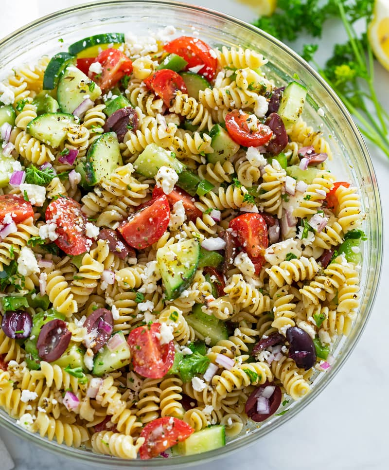

Pasta Salad

A mouth watering delicous homemade pasta salad!
This recipe was created from the heart. Made first by Jack & Ari at their Hawaii home,
this dish signifies the creation of tastebud orgasms. You will have never thought your
mouth could be so pleased at one moment!
Ingredients
- Gluten free pasta noodles (macaroni or ritoni)
- A organic vinegerette dressing
- Banana peppers
- Black olives
- Artichoke hearts
- Red pepper flakes
- 2oz lemon juice
How to make!
- Take your fucking pasta and shove it up your ass
- Aim your ass towards a pot with boiling water in it on a stove
- Push like youre trying to squeeze out a bowling ball, and spray your shitty pasta all over the stovetop, hopefully getting some into the pot.
- Stir your shit stained pasta until the it starts to get soft and squishy (overcooked)
- Take the pot, with boiling water still in it, and pour it down your miserable cock holster (ass or mouth)
- Take all the prior ingredients listed, and shove them into the desired hole
- Find the nearest washing washine or dryer, turn it on full blast and climb in to mix up the ingredients inside your body
- If you survived, puke/shit out everyting and enjoy!!!
Return to main page